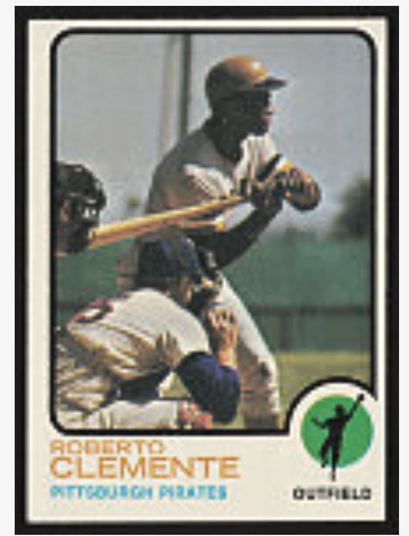

I picked this card because Roberto Clemente is one of the most important Latino players in MLB history, and I think his story deserves more attention than it usually gets. The card itself was issued the year after his death, so it kind of works as both a baseball card and a memorial to him at the same time.
Roberto Clemente played 18 seasons for the Pittsburgh Pirates from 1955 until his death in 1972. Born in Carolina, Puerto Rico, he was a trailblazer for Latin American players in Major League Baseball and is remembered as much for his humanitarian work as for his athletic achievements. He was a 15-time All-Star, won 12 Gold Gloves, and collected exactly 3,000 hits before his death at age 38. This 1973 Topps card, numbered 50 in the base set, was issued after his passing and serves as a memorial tribute from the Topps Company. The Library of Congress received this card as part of a gift from the Strawbridge Family in 2020 and it now forms part of the Topps baseball card collection.